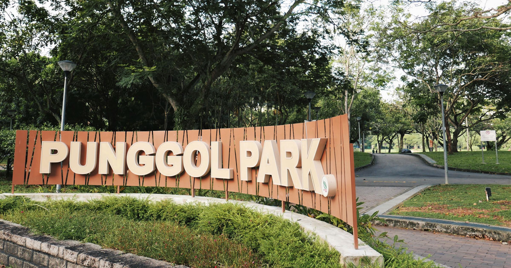
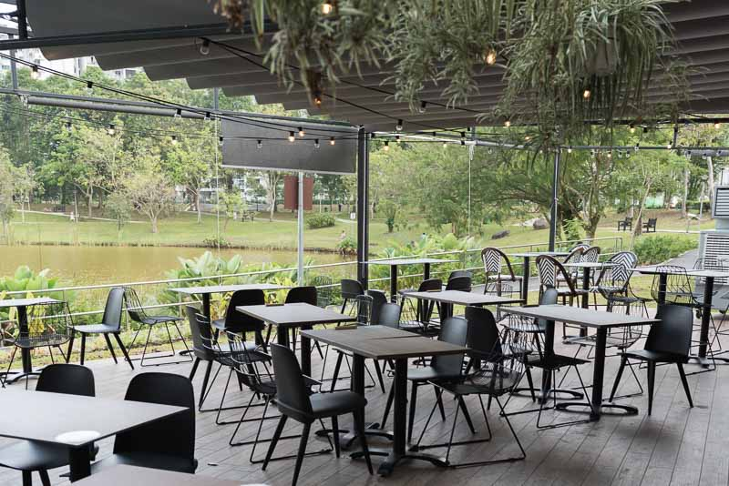
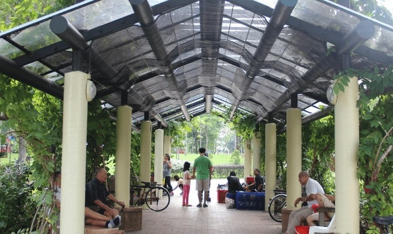
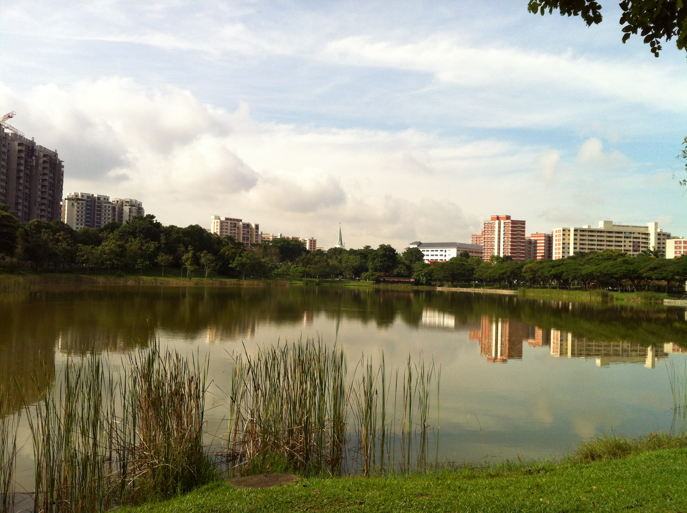
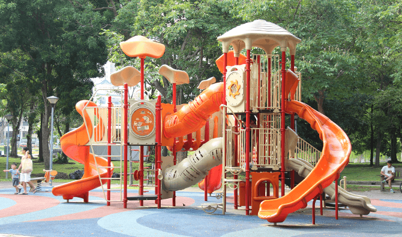
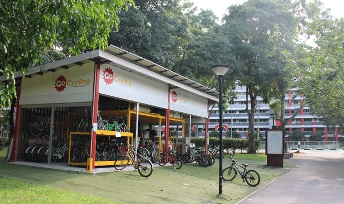

Punggol Park has facilities and activities for the whole family.
Children can play together on the play equipment and families can engage
in tai chi at the plaza area.
Park connectors are a key step in NPark’s efforts to give Singaporeans easy access
and linkage to our major parks and nature areas. In recent years, Singaporeans of
all ages have expressed great interest in using the connectors for recreational
pursuits such as jogging and cycling, as well as useful short cuts to facilities within
and beyond their own neighbourhoods.
This park connector also joins Punggol Waterway
and passes Anchorvale Community Club,Sengkang Sports Complex and Singapore’s largest
man-made wetland, Sengkang Floating Wetland,before ending at Gerald Drive

Five &2 bistro cafe has a prime spot right by the lake. This cafe serves
up “Mod Sin” food and drink, which means Modern Singaporean – traditional
local dishes with a twist.If you’re looking for somewhere with a good ambience,
feel-good AND tasty food, you should probably swing by Punggol Park soon.
Five &2: Punggol Park, 97 Hougang Avenue 8, Singapore 538792 |
Opening Hours: 5pm – 11pm (Mon – Thurs), 5pm – 1am (Fri),
4pm – 1am (Sat) & 4pm – 11pm (Sun) |
Tel: +65 6282 8801 | Website
|Facebook
 There is also a good pit stop for joggers to rest or do some simple stretching on the fitness equipment before commencing their run.
 There is also something for anglers with the fishing promenades located around the 5-hectare pond. If you find all the activities too much for you, you can choose to sit back and relax at the outdoor dining area of the restaurant located within the park.
 The Punggol Park playground with a set of swings is located in the middle of the park. Something for the little ones to play.

You can rent bicycles at Punggol Park from a kiosk located at a corner of the park,
close to Sungei Pinang. Some of the bikes are equipped with baby seats, so even those
with little ones can enjoy a bit of a spin.
GoCycling @ Punggol Park | 11 Hougang Avenue 10, S(538768)
Tel: 98590053 | Mon-Fri: 10am-7pm | Sat/Sun/PH: 9am-7:30pm
Park Size: 16 hectares Park lighting hours: 7pm-7am Nearby Parks/Park Connectors: The North Eastern Riverine Loop Accessibility info: Wheelchair accessible Specific Dos and Don't: Do not release animals into the pond
By car: Park at Punggol Park carpark. By mrt: From Buangkok or Hougang MRT Station, take a 10-minute walk to Punggol Park via Serangoon Park Connector. By bus: Take bus service numbers 74, 113, 119 or 147 to Hougang Ave 8 and walk to Punggol Park.